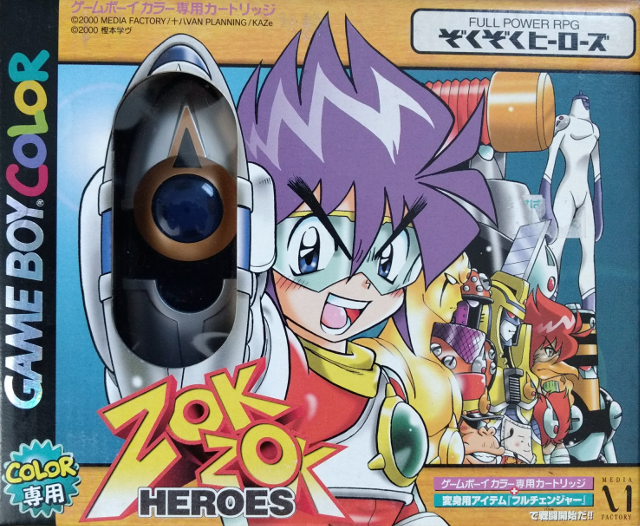
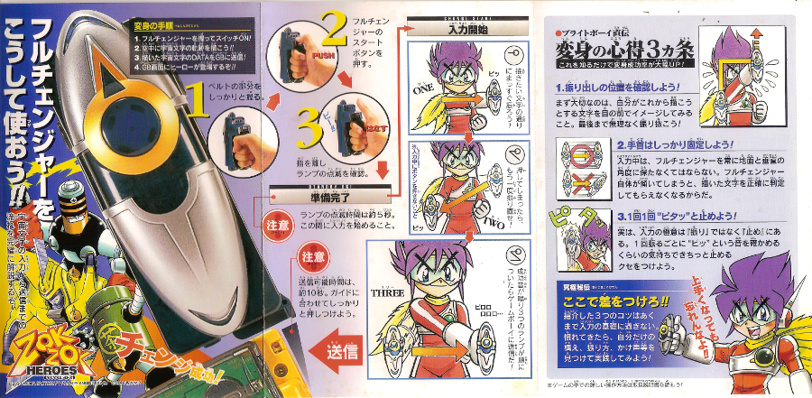
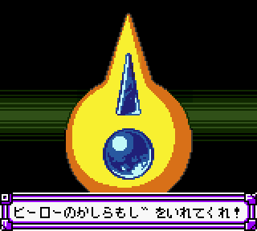

The hunt continues
Currently this year, I've gone head-to-head with some very unusual pieces of Game Boy hardware. As part of my quest to emulate just about everything on the Game Boy, I've already taken down Barcode Taisen Bardigun and the Barcode Boy. Both of those card scanners proved very interesting to investigate and figure out what made them work, however, they aren't the most "exotic" accessories out there. It's hard to imagine what more the Game Boy could do, given its ability to scan barcodes, take pictures, print pictures, and connect to the internet over mobile phones. Even so, one game in particular managed to push the boundaries on bizarre gameplay: Zok Zok Heroes.
As one YouTuber once said, probably only 3 people have heard about Zok Zok Heroes. "What is a 'Zok Zok'?" pretty much summed up my initial reaction when I stumbled across the game's name. I was searching for stuff no one had emulated yet, and Zok Zok Heroes came up on KiGB's list of games with unemulated features. Curious, I did some digging. Zok Zok Heroes is a GBC JRPG where you play as an ordinary boy or girl who then transforms (Super Sentai style) into various heroes to battle against the forces of evil. On the surface, it looks like a typical, quirky, Japan-only game, but there's more to it. The game came with a device called the Full Changer (フルチェンジヤー) which allows players to change into different heroes. You push the button, then swing the Full Changer through the air to form different patterns. If the pattern is recognized, the Full Changer transmits data to the GBC via the infrared port. Essentially, Zok Zok Heroes boils down to swiping around a plastic toy to activate its built-in accelerometer, which in turn dictates a series of light pulses sent to the GBC. It's absolutely nuts, and I want to emulate that.
Although, I must say, the entire premise behind the Full Changer looks oddly familiar... Doing a bunch of poses to gain access to new powers... I know I saw something just like it recently, just can't put my finger on it.
(Source: castaform)
Zok Zok Heroes is so far off the map, I don't think anyone has ever even legitimately attempted to preserve it. When viewed on paper, the game and the Full Changer are real head-scratchers; how exactly does one try to emulate all of that? Where would people start looking in order to reverse engineer anything? Is it even possible to recreate the experience on a computer? Despite such looming questions, I decided to dive right in and deal with these problems on the fly; there's simply no time to spare. Like many of my other "white whales" of emulation, the underlying hardware is old and getting older. Zok Zok Heroes just turned 17 this month, so it was very important to begin work as soon as possible. Who knows how many functioning units are still available and for how long they'll last. As usual, there's a certain urgency involved here. Just like before, it's time to go rushing off into the great unknown, to the furthest reaches of emulation.
Magical Game Boy Transformation!
Standard operating proceedure is to acquire the original hardware. The Full Changer is such a unique accessory that I doubt I could successfully map out what it does just by examining Zok Zok Heroes's game code. Additionally, infrared communication with the GBC is notably difficult to analyze. Unlike serial input-output (the Link Cable), which has a nice communication protocol supported by interrupts, sending and receiving data via the IR port is far more complex and involved, not to mention finnicky in real-life conditions. Getting a Complete-In-Box copy of Zok Zok Heroes was relatively easy and cheap online, to my surprise. I actually expected it to be a bit rarer, but I wasn't going to complain about low prices. This time around, no trouble from the post office either.
Once everything arrived, I was set to begin. The Full Changer is pretty much a long block with an ovular faceplate up front. The rear has an adjustable velcro strap where the player's hand is supposed to slide in. On the back, up top, there is a button used to activate the Full Changer, and above that are 3 red lights. On the very bottom there's another, smaller button. Players have to physically put the Full Changer on the GBC's IR port; when the two touch, the bottom button is pressed, which in turn causes the Full Changer to start beaming information. The whole thing operates with a CR2032 battery. Amazingly the Full Changer I got was basically brand-new; the little plastic tab was still in the battery slot, and even at 17 years old, the battery worked out of the box.
Overall, the Full Changer's a real fascinating bit of gaming history, and I was very excited to have it in my possession. However, before I could poke and prod anything, I had to figure out how to actually use it... It sounds simple enough: just wave it around until it starts blinking and beeping correctly. I tried it, and nothing seemed to properly activate the Full Changer. After spending some time translating the instructions from Japanese, I finally got the proceedure right. Apparently the top button is pressed and then released, after which the 3 red lights will blink for about 5 seconds. During that period, players need to move the Full Changer in specific patterns (宇宙文字, literally space character or space letter, but I'll translate them as "Cosmic Characters"). When movement is detected, one of the three lights turns on until all three are lit up. At that point, the Cosmic Character is complete and ready for transmission to the GBC.

This is how you use the Full Changer. Some advice: always RTFM.
With this sorted, I had the game and accessory, and I knew how to use it. Then came the hard part: how to peek inside the Full Changer when it's sending data? With the barcode readers from the previous Edge of Emulation articles, I could just hack the ROM and collect any data transferred via serial input-output. The process was made relatively easy because serial input-output triggers a hardware interrupt on the Game Boy, meaning there's always a specific, permanent vector to inject my own code. IR communication on the GBC has no such interrupts, and the insertion point for custom code could be anywhere. Further complicating matters, IR communication works by turning the light on and off at different intervals, kind of like morse code. Different lengths of on-off periods represent different data. In contrast to serial input-output, which always transfers one byte into a specific memory location, IR data has to be deciphered from the "delays" or gaps in the light pulses. I can't just arbitrarily read a byte from the GBC's IR port. Lastly, IR communication is fairly fast, and data can be sent in as little as 64 cycles or less. Properly collecting and recording anything from the Full Changer needs to be quick and optimized.
Due to all of these difficulties, I initially believed hacking the ROM would be too problematic for reliable results. I needed another option specifically tailored to the Full Changer and capturing IR pulses. In the end, I chose to make my own tool as homebrew software. My IR "recorder" was straightforward in design; it would constantly check the status of the IR port, and every time it found a change from on-to-off or off-to-on, it would store the delay to my flashcart's saved RAM via a 16-bit counter. Using a special toolchain I created myself for GB development, I made, tested, and perfected my recorder in a few hours. To my surprise and delight, it played nicely with the Full Changer on the very first trial runs. It managed to grab the IR data for one of the simplest Cosmic Characters, the "Z". The save file pulled from the flashcart had the results necessary to start emulating the Full Changer.
Not even my final form
Even with that much successfully done, it was really only just the beginning of a longer process. The data was there to read, but what did it mean and how would an emulator utilize it? The save file kept track of the delays, which signified periods when the IR light switched on and off. Since IR communications are very sensitive to timing, it was important to know exactly how long these delays were in terms of CPU cycles on the Game Boy. Based on the code from my recorder, I counted out the cycles by hand to determine how long it took to get a certain delay. Afterwards, I turned my attention towards implementing these delays in an emulator. The solution was to manually manipulate GBE+'s emulated IR port according to these delays, i.e. turn it on after a given number of cycles, then turn it off after another given number of cycles. Thankfully, GBE+ had pretty decent support for the GBC's IR port; most of the required infrastructure was already present when I attempted Full Changer emulation.
So, all of the pieces were set up, and it looked like this adventure was going to be fairly easy. Just flip the IR light on and off at certain intervals, then the Full Changer should work. Simple, no? Everything would run perfectly, and I could call it a day and go home happy, right? Well that plan didn't go quite smoothly... I opened up a debugger and watched Zok Zok Heroes execute step-by-step. Initially it seemed fine, but in the end, sadly nothing happened. After inspecting GBE+ inside and out, I came to the conclusion that my timings were imprecise. The data my homebrew tool had picked up was close, but somehow off. Running several more tests confirmed this without a doubt; Zok Zok Heroes would silently reject whatever input I gave. However, since the delay data was almost kinda correct, it allowed the game's code to reach a point where it had to verify the numbers (completely messed up data would just timeout). This section in particular looked very promising as I reconsidered making a ROM hack. A hack could hook into the verification code and see what values in memory Zok Zok Heroes expected.

This screen is where emulators get stuck if they can't properly emulate the Full Changer.
Fortunately, it didn't take long to craft such a hack. Zok Zok Heroes stores 18 bytes in Work RAM after receiving IR signals from the Full Changer. These bytes represent the total amount of time the light is on and then off. My hack copied these bytes to saved RAM so I could extract them from the flashcart. After playing the hack on my GBC and using the Full Changer in-game, I managed to capture the exact delays that real hardware uses. To reiterate, the delays were meaningless unless converted into CPU cycles. I had to disassemble the code in Zok Zok Heroes responsible for recording the delays and find out how many cycles a given delay generated. After a lot of counting, recounting, re-recounting, double counting, and counting again, I finally pinned down all the numbers.
I should mention that a handful of instructions in GBE+'s DMG-GBC core had incorrect timings. Those were leftover artifacts from when I first started emudev a long time ago. I never got around to fixing them because nothing I tested was broken, so it never became a priority. The bad timings greatly interfered with debugging the Full Changer in GBE+, and moreover the Full Changer wasn't going to work at all unless the issue went away. It was trivial enough to patch up the CPU; even so, timing remained a challenge. Consider that Zok Zok Heroes runs in a loop while it waits for the player to use the Full Changer. The game constantly pings the IR light to see if it's receiving any signals. In GBE+, sending data from the Full Changer is controlled by a hotkey. When that hotkey is pressed, it triggers the IR light and breaks Zok Zok Heroes out of that loop. GBE+ has no control of where the game is in that loop when the hotkey is pressed; it could be at the very beginning of the loop or the very end. That means GBE+ adds an unknown amount of cycles to the delays if it turns on the IR light immediately after the hotkey, which can potentially throw off everything. To solve this, I forced GBE+ to turn on the IR light at a specific time (after the hotkey is pressed, but also after the CPU reads the IR status from memory); that gave a consistent number of cycles no matter when the hotkey was pressed.
Finally, GBE+ had exact delays and exact cycle counts, which meant the Full Changer should work as intended, correct? The answer was... yes! Witness Zok Zok Heroes being properly emulated for the first time. Previously, the only way to make it this far in the game was to use cheats or hacks. FYI, a save state is used in the video below to skip approximately 5 minutes or so of intro text and cutscenes.
Nothing is impossible. Never surrender. Emulate everything.
For the prototype, GBE+ simply loaded a file with all of the delay data. Currently, it's only designed to transmit one Cosmic Character at a time, although the ultimate goal is to create a database from which players can dynamically select different ones. There are about 70 types of Cosmic Characters (all associated with hiragana characters), and to help build that database, I reworked my homebrew tool to accurately mimic the timings from Zok Zok Heroes. Now it can correctly capture data from the Full Changer, which is a lot quicker than having to use the ROM hack. Unfortunately, only a handful of Cosmic Characters are known at this time. The game comes with a chart describing the movements used to draw a few, but most of it is left blank. I assume one would have to play through the majority (or entirety?) of Zok Zok Heroes to unlock the rest. Another option would be dissecting the Full Changer itself and decapping the chips inside (way outside my comfort zone). For now the complete set of Cosmic Characters is hidden behind the game itself, but at least it's possible to emulate the available ones. At any rate, I expect that future releases of GBE+ will come pre-packaged with a database that will gradually expand. For any other emudevs interested in the Full Changer, you can find my technical notes here.
No more dead heroes
Zok Zok Heroes' Full Changer thus far has been the craziest thing I've ever emulated, however, I suspect it won't keep that title forever. There are still plenty of other items on the Game Boy that are probably out-of-this-world, like Bandai's Pocket Sonar (if only I could get my hands on that). While another "white whale" has been cornered, there are still plenty more swimming at sea. I have my eyes on another target, but like before, I'll keep it a surprise. Even all these years later, we're just now starting to scratch the surface when it comes to completely emulating the Game Boy and its extra hardware.
Once more, I'll stress the importance of documenting and archiving games, especially through emulation. As I said, it's been 17 years since Zok Zok Heroes first came out, and only today are we getting proper support for it. If it weren't for some random discussion on Reddit, I probably wouldn't have been inspired to take on obscure Game Boy stuff as a priority; who knows when someone else might have even touched the Full Changer, if at all. The company that originally made Zok Zok Heroes has long since been defunct (or rather, they don't make games anymore), so no official entity has any intentions of reviving the game or at least making it accessible to current or future gamers. That duty falls on the emulation community, but this is the danger we face; we don't exactly have tons of people with the necessary amounts time, interest, and skills to make sure these games live on. Not only are old copies of games limited and finite, the number of emudevs willing to preserve them isn't particularly high. In reality, as popular as emulation has become in the past few decades, it's still fairly niche in the grand scheme of things, which is a shame considering video games are part of our culture.
That's why I'll keep working to emulate new things, to do my part as a gaming preservationist. I won't stand to see any video games disappear due to age and time. I won't allow them to be forgotten and fade away. It's a constant struggle, but the alternative is to simply let gaming history die, which is unacceptable. I don't see myself or the larger emulation scene quiting soon, however. We're not done yet, and where there are more games that need to be saved, I know we'll rise up to the task. On that note, expect more never-before-emulated Game Boy goodness from me in the very near future.